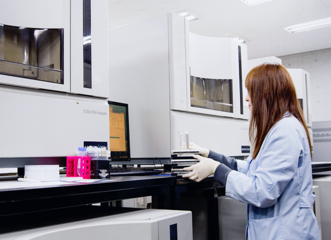
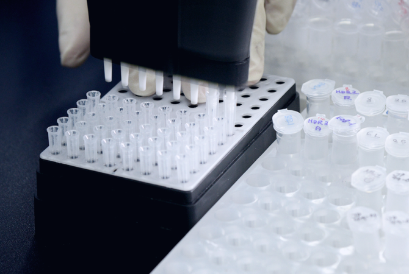
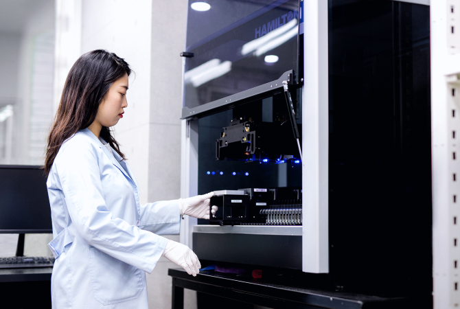
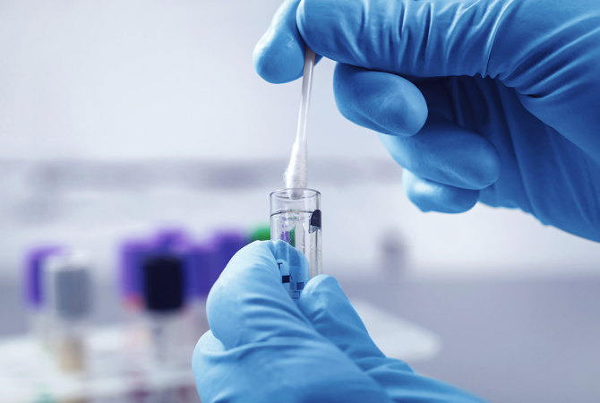

We provide a superior quality of CES (Capillary Electrophoresis Sequencing)
services, based on extensive experience and expertise accumulated over 20 years
Capillary Electrophoresis Sequencing (CES) is a service that
analyzes DNA sequences using a biochemical method.

Our service maximizes customer satisfaction through a variety of product lines
ranging from the most common services such as Standard Sequencing, Identification, Fragment
Analysis, and Customized Sequencing Service, which is a renewed service from the original
sequencing. Aside from general sequencing services, Macrogen’s CES service provides additional
customized services (gDNA extraction, primer synthesis, PCR amplification, and purification)
according to customer requests. A separate online order system is also available for customers’
convenience so that they can request a desired service. Monitoring of all processes and follow-up
for the results are provided for each ordered sample.
Standard Sequencing
Standard sequencing is a service that sequences PCR products and
plasmid DNA requested by customers.
Macrogen provides quicker and more accurate services based on
its Capillary Electrophoresis Sequencing (CES) automation system and extensive experience.
After the results are delivered, a team of experts in the sequencing field are ready to provide
the follow-up service.
Features
ABI 3730xl System
High quality results 및 Normal read length (1,050bp)
Real-time monitoring available from order receipt to delivery of the results
based on Laboratory Information Management System (LIMS)
Results provided within 24 hours after the submission of the sample (to be
submitted before 6:00pm)
Free basic analysis service (homology search using BlastN and DNA sequence
orders)
Free universal primer
Standard Sequencing Single/Plate
Standard Sequencing Single/Plate
Standard sequencing can be performed with single tubes and
96-well plates.
Additional Service
PCR product purification (both single/plate available)
Gel extraction
Clones sampling & plasmid extraction (Single/Plate/Agar plate)
BAC/Fosmid/Cosmid extraction
Confirmation of concentration by gel running
Difficult Template Sequencing
Difficult template sequencing is a service for sequencing
templates that have an unusual structure based on the customer’s information after
confirming
the standard sequencing results. In particular, it is suitable for templates with the
following specific structure, and provides improved high-quality results.
Identification
This is a package service that provides universally used
microorganism/biological species identification test from prep to analysis.

16S/18S/26S rRNA&ITS Region Full Sequencing
16S/18S/26S rRNA&ITS Region Full Sequencing
This service identifies bacteria by performing PCR using
16S
rRNA gene 27F and 1492R primer and sequencing them with inter-primers, 785F and 907R. We
provide
a base sequence of about 1,350bp or more by selecting/changing the primer if requested by
the
client.
Bacteria+
For bacteria, PCR of 16S rRNA genes is performed using 27F and
1492R primers, and it is sequenced using 785F and 907R primers, which are the
inter-primers, for identification.
We provide a base sequence of about 1,350 bp or more by selecting/changing the
primer if
requested by the client.
Fungi
1,600bp or higher results are guaranteed by the sequencing of
the
18S rRNA region. 500bp or higher, as well as 1,300bp or higher results can be
obtained
by the sequencing
of the ITS region and 26S rRNA gene (D1/D2/D3 region), respectively.
Rapid-ID
This is a microbial mass spectrometry identification
service
based on the MALDI-TOF protein sequencing technique and uses the world's first FDA clearance
and
AOAC-certified system. It takes less time than the existing sequencing service and is
suitable
for clients who want more accurate identification. It identifies microorganisms and
classifies
species or genus. Because of its accuracy and immediate results, it is mainly used for
microbial
identification and contamination detection in many medical, pharmaceutical and cosmetic
manufacturing industries. We provide reliable service, earning the first FDA clearance and
the
validation from AOAC, an American certification body.
Features
Delivered at 10:00 a.m. the next day (only for orders received before 1:00 p.m.
on
the same day)
Different rates by optional service types (TAT 0, 1, 3) and each type
Align Peaks with unique Adaptive Binning technique
First FDA Clearance for microbiological identification accuracy and AOAC
Validation
(US)
Fragment
The fragment analysis service includes various services such as
genotyping, DNA profiling, medical mutation detection, and agricultural research.
Macrogen provides a microsatellite analysis (VNTRs) service based on our extensive experience
and know-how.
Fragment analysis (Genescan)
Fragment analysis is a service that separates and analyzes
amplified PCR products according to fragments using a primer marked by a fluorescent label.
It is used for genotyping, DNA profiling, medical mutation detection, and agricultural research.
We also provide test design service from PCR optimization to analysis upon request.
Service types
Microsatellite instability
Amplified fragment length polymorphism (AFLP) analysis
Terminal restriction fragment length polymorphism (T-RFLP) analysis
Relative fluorescent quantization - Loss of heterozygosity (LOH), Aneuploidy
assays, and Large chromosomal deletion detection
Sequence-related amplified polymorphism (SRAP)
Features
The result data is provided in FSA file format (PDF/Excel also available)
The results are delivered within 3 to 7 business days after the collection of the
samples.
Customized service from PCR optimization to fragment analysis is available
PCR Optimization/Amplification
Customized Sequencing
Customized Sequencing provides sanger sequencing tests, prep, PCR,
cloning, and pyrosequencing under the same conditions.

PCR Optimization/Amplification
PCR optimization is a customized service that performs and
analyzes the entire process from primer design to PCR amplification, sequencing, and BI
report
when the customer provides references together with cell/gDNA in relation to the desired
target
region. If the retest rate is high due to the rarity of the sample in PCR amplification,
touchdown PCR amplification, nested PCR amplification and FFPE PCR amplification, then
Macrogen
solves the problem by using its customized PCR amplification service.
Features
Customized service
Pre-tests for high-quality results
Accurate and quick delivery and control of results by dedicated teams
gDNA extraction from samples of plants and animals
Pyrosequencing
Pyrosequencing is a sequencing service using pyrophosphate
(PPi) generated when the polymerization of nucleotide with DNA occurs.
Since there are more epigenetics studies on controlling the expression level of certain
genes,
regardless of DNA sequence, there is a growing interest in DNA
methylation services. For DNA methylation analysis, very accurate and reliable results can
be
expected by using the pyrosequencing service. Pyrosequencing is
used for epigenetics and cancer research efforts, and it can be validated based on the
results
of the NGS service provided by Macrogen, making it easy for clients to
increase the accuracy of the results.
NGS Validation
NGS Next Generation Sequencing (NGS) validation is a service that verifies data using Sanger
sequencing to improve the accuracy and reliability of data
after using the NGS service. When the client provides the chromosome position or reference
sequence, we analyze the SNP of a certain area and the mutation results.
It can be provided as one-stop service in line with the NGS service.
Features
Quicker and more accurate tests for clients using Macrogen’s NGS service, thanks
to
direct transfer of the samples.
When the chromosome position and reference sequence are verified, one-stop
service is
available from overall primer design to verification of sequencing results and
comparative analysis of variants.
Normal control data can be checked for comparison for more accurate results if
necessary.
Data can be checked using two primer sets for the same site.
MLST analysis
MLST (Multilocus Sequence Typing) is a technique used to
classify strains with the same species such as bacteria and fungi. Sequencing is performed
on
five to seven specific housekeeping genes of species to analyze the correlation of each ST
(Sequence Type). Genetic/molecular evolutionary relations can then be verified by the
combination of alleles for each strain in the same species.
One-click Sanger Sequencing
One-click Sanger sequencing is a technique for analyzing certain commonly studied gene
variations with just one click for more convenience and quicker results. Optimized results
from
gDNA extraction to PCR amplification, sequencing, and SNP analysis are delivered to clients.
Our
dedicated team of researchers perform sequencing of specific exon areas and provide variant
analysis results using a primer set manufactured based on many years of know-how. The
sequencing
results are widely used in studies and medical fields through genetic analysis of diseases.
Based on our extensive experience and accurate reference, we establish an optimum test
process
for each gene for more precision.
Primer Walking
Primer walking is a service that analyzes the sequence of plasmids or PCR products that
cannot
be read at once by single primer extension. It is generally used to obtain about 2 to 10kb
of
sequence information. End sequencing is performed with a primer provided or specified by the
client, and the internal primer is designed and produced based on the results. This is
extended
continuously by redesigning the internal primer in a suitable location from the results
obtained
by the new primer’s reaction with the same template. Walking takes about 4 days, and can be
extended about 500 – 800bp in one direction. The results are used for basic molecular
biology
research, breeding research, and genetic disease research, and it reduces the test time as
Primer Design, Synthesis, and Sequencing are performed.
Cloning
The cloning service is performed by separating a specific gene or DNA section and
duplicating it
in large amounts. The service is provided by inserting a PCR product in the vector (T-vector
or
blunt-vector) provided by Macrogen or via the vector from the customer (sub-cloning). For
various reasons, more than one PCR product can be present; in this case, it is not possible
to
obtain normal sequencing results, but the situation can be improved by cloning, and a large
amount of DNA can be duplicated and safely stored.
Human ID
Human ID provides a personal genetic identification service for
research and development purposes.
The service provides a parentage test that can determine a
biological relationship by comparing and analyzing an individual's unique DNA pattern, paternity
test that can prove a biological relationship on the father's side up to the first cousin four
times removed, and a maternity test that proves a biological relationship on the mother's side.
It also provides a DNA test for the deceased and personal identification tests. Human ID
conducts genetic analysis on various specimens such as hair, oral epithelial cells, ashes, and
saliva, and provides reliable test results with 99.99% accuracy.
Test Purposes
Proof of lineal descendants/paternity/maternity
Personal identification
Mutagenesis service available
Proof of biological relationship using the DNA of the remains of the deceased
Genetic identification for the suspect and the evidence of the crime scene
Parentage Test
16 STR (Short Tandem Repeat) genes including sex-chromosomes are tested through
gene
amplification to determine a biological relationship. STR refers to a section in
which 2 to 7 bases in the human DNA sequence are continuously repeated. The
number
of repetitions of the ATG sequence can be checked to prove a biological
relationship
on the father's side. By examining 16 STR genetic locus, if the test probability
of
a possible father, mother, and child is 99.999% or higher, and the test
probability
of a possible father (or mother) and child is 99.9% or higher, they are
recognized
as the biological father (or mother).
Paternity Test
For sex chromosomes, males have XY and females have XX.
The Y
chromosome exists only in males, and the Y chromosome received from the father
is
passed on only to the son. Therefore, when compared to the parent's DNA, the
half
matches the father and the other halfm atches the mother. The paternity test
examines 15 STR genetic loci present on the Y chromosome, and when the
probability
is 99.9% or more, the person can be considered as the child.
Maternity Test
Human cells contain a small amount of mitochondrial DNA
outside the nucleus along with the DNA present in the nucleus. During cell
fertilization, the sperm transfers only the DNA in the nucleus to the egg. As a
result, mitochondrial DNA cannot enter the fertilized egg. Consequently,
mitochondrial DNA is inherited from the mother. The mother's mitochondrial DNA
is
passed on to her son and her daughter, who in turn passes on her own
mitochondrial
DNA to her offspring and thus, this is used to study the human origin of the
child.
Personal Identity Test

Personal identification testing or DNA profiling is used
as a
genetic testing method in criminal investigations. Human ID analyzes 16 STR loci
based on the international standardized analysis technique (CODIS locus used by
the
FBI) and conducts personal identity tests. STR (Short Tandem Repeat) refers to a
section in which 2 to 7 bases are continuously repeated in a human DNA sequence.
This analytical technique is similar to inheriting a blood type from their
parent.
For instance, if the parents have type A and type B blood, type AB blood can
result
in the child. Likewise, if one's DNA profile is examined, it is expressed that
the
number of repetitions of the nucleotide sequence inherited from the parent is 11
and
13 (11/13), respectively. At least 15 of them are analyzed to determine if they
are
the same person.